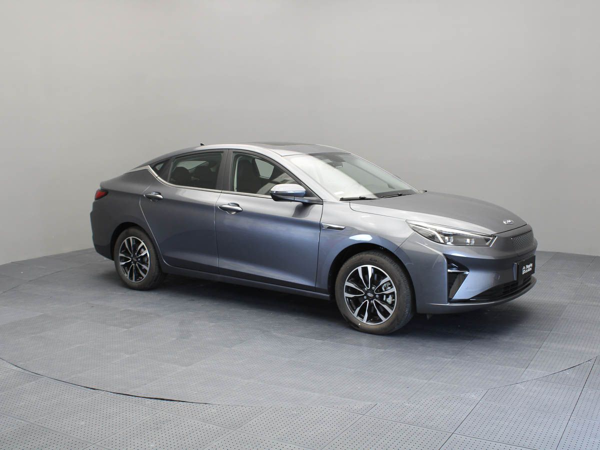

JAC E-J7 AT 100% Eléctrico Autonomía De 400 Km 2024 0km

MOTOR: 55 kW (75 cv)
AÑO: 2025
Batería: Batería Blade LFP de 30,08 kWh
TRANSMISIÓN: Automática
Precio: U$S 21.990
Es un sedán eléctrico de última generación que combina sostenibilidad, tecnología avanzada y un rendimiento excepcional. Con su autonomía de 400 km, es perfecto para quienes buscan un vehículo ecológico sin sacrificar la comodidad y el estilo.